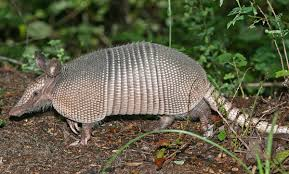

armadillo

- Hábitat y Estilo de Vida: Los armadillos se encuentran en América Central y del Sur, y algunas especies también en América del Norte. Habitan en una variedad de hábitats, incluyendo bosques, pastizales y desiertos. Son animales nocturnos que se alimentan de insectos, pequeños animales y plantas.
- Caparazón óseo formado por placas óseas con el cual puede defenderse de sus predadores en su habitad natural y Caparazón dorsal formado por placas yuxtapuestas
- Garras fuertes para excavar madrigueras.
- Lengua larga y pegajosa para capturar insectos.
- Buena capacidad para excavar.
- Visión relativamente pobre, pero un buen sentido del olfato.
menu